Λιθοτεχνία
Αρχιτεκτονικά και διακοσμητικά στοιχεία από τις ίδιες πέτρες της γκάμας, σε τυποποιημένα προφίλ ή βάσει των δικών σας σχεδίων. Στείλτε το σχέδιο· η προσφορά ακολουθεί εντός πέντε εργάσιμων ημερών.
Κίονες & κιονόκρανα
Κίονες, παραστάδες, βάσεις και κιονόκρανα, λαξευτά ή τορνευτά σε μάρμαρο, ασβεστόλιθο ή γρανίτη βάσει των σχεδίων σας, ή αντίγραφα πρωτότυπου κομματιού.
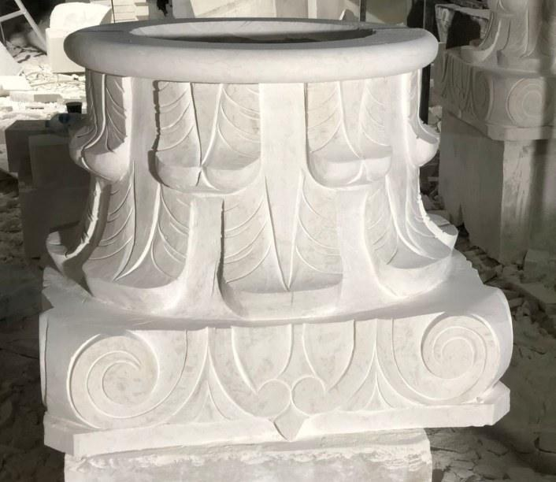
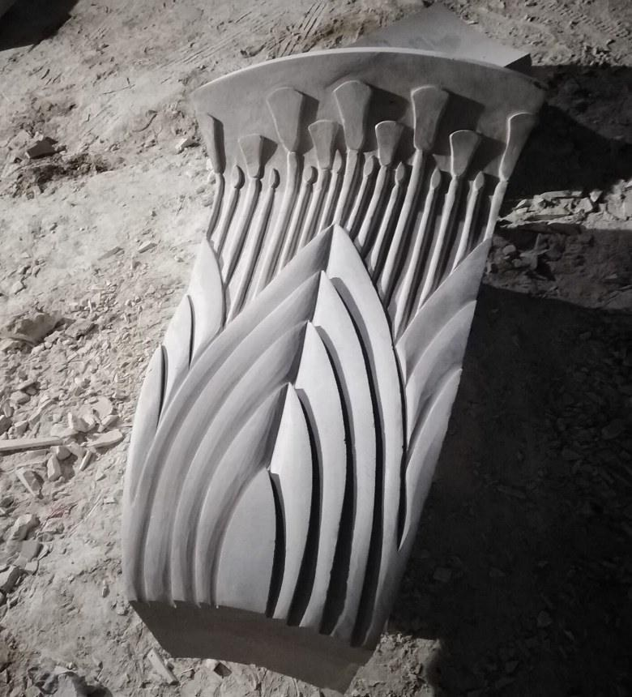
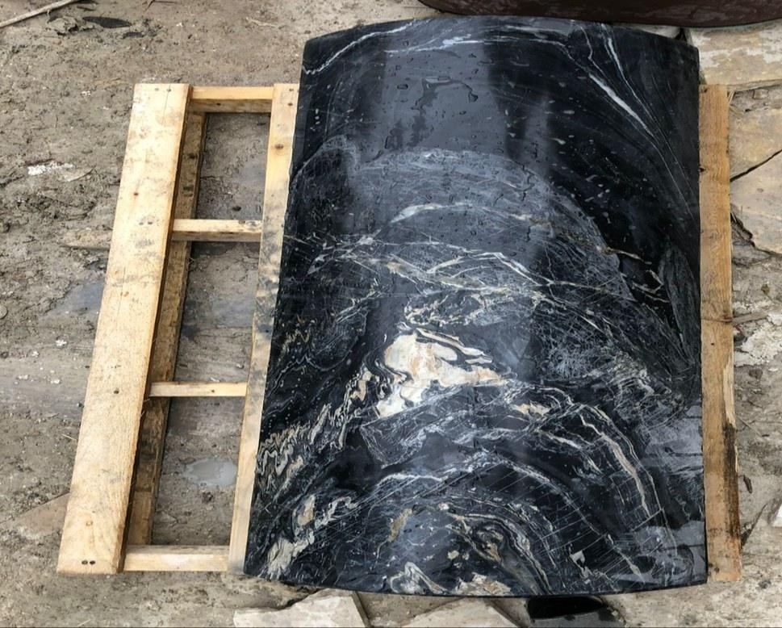
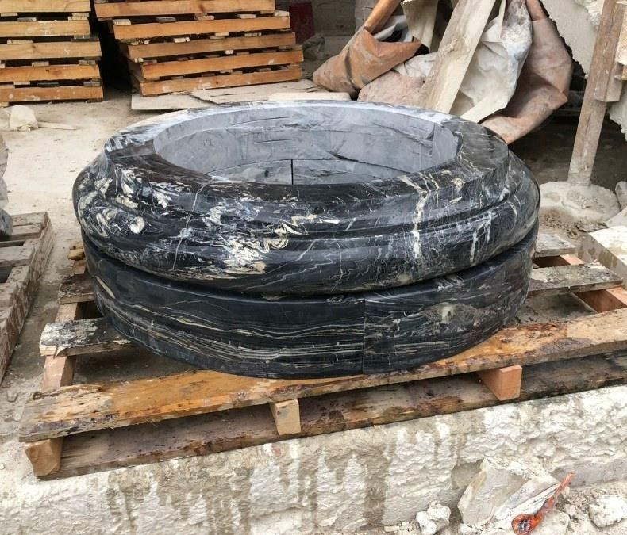
Μπαλούστρες, φουρούσια & κορνίζες
Τορνευτές μπαλούστρες, λαξευτά φουρούσια και κορνίζες, σε οποιαδήποτε πέτρα της γκάμας, σε τυποποιημένα προφίλ ή βάσει των σχεδίων σας.
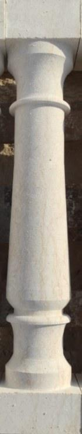
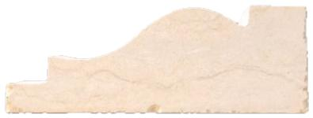
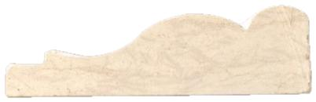
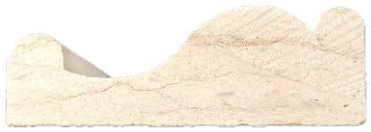
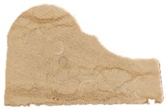
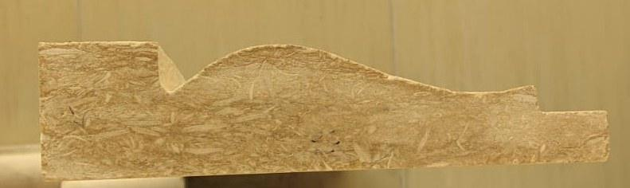
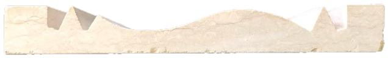
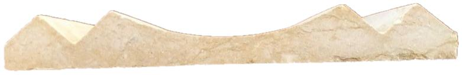
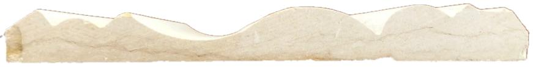
Πάνελ & ψηφιδωτά
Ψηφιδωτά και ροζέτες συναρμολογημένα στο χέρι για δάπεδα και τοίχους, και πάνελ κομμένα σε CNC και φινιρισμένα στο χέρι, σε γεωμετρικά ή φυτικά σχέδια.
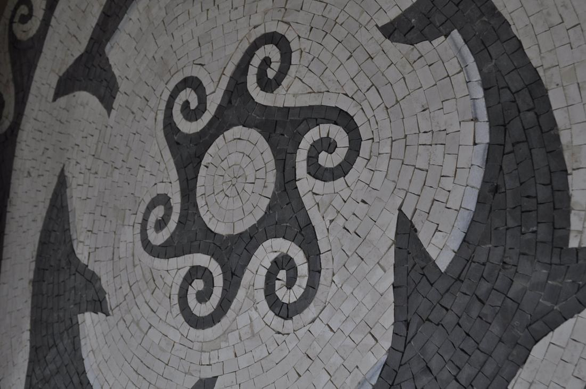
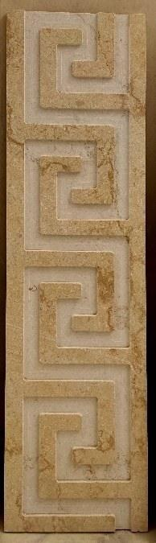
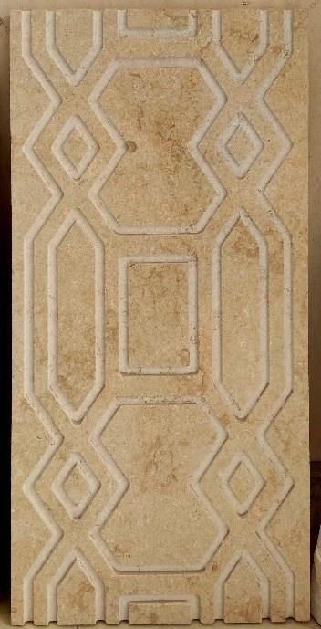
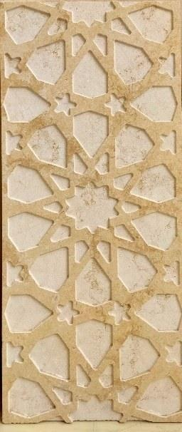
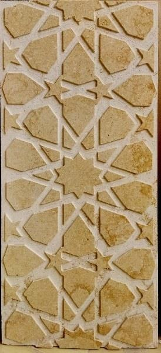
Βάσει των σχεδίων σας
Αν μπορείτε να το σχεδιάσετε, μπορεί να γίνει από πέτρα. Κι αν η πέτρα δεν είναι στη συλλογή, βρίσκουμε το λατομείο, στέλνουμε φωτογραφίες των όγκων και τη φέρνουμε στην αυλή.
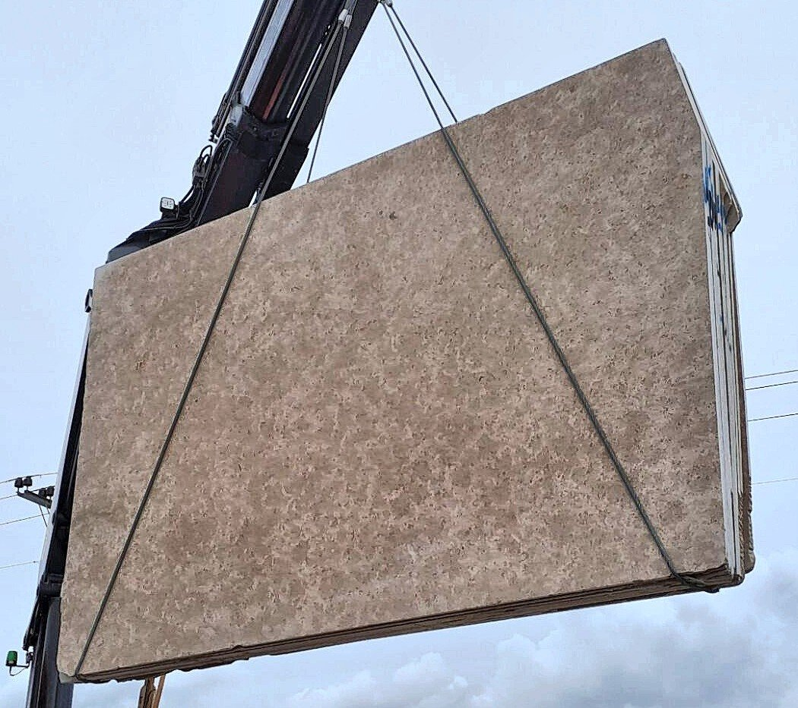
Τι χρειαζόμαστε από εσάς
Από το λατομείο στην αυλή
Οι όγκοι ελέγχονται στο λατομείο και επιλέγονται για υγιή δομή και ομοιόμορφο χρώμα. Οι πλάκες κόβονται έως 300 × 195 cm και φυλάσσονται σε καβαλέτα στην αυλή στο Κορωπί. Επίσκεψη κατόπιν ραντεβού· οι πλάκες που σημειώνετε είναι οι πλάκες που παραλαμβάνετε.
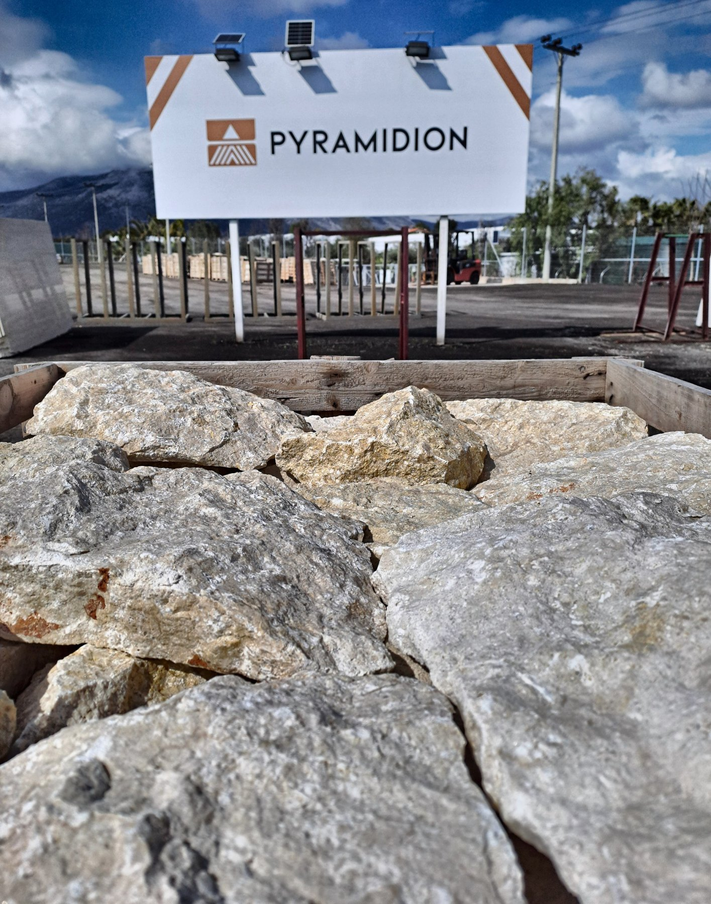